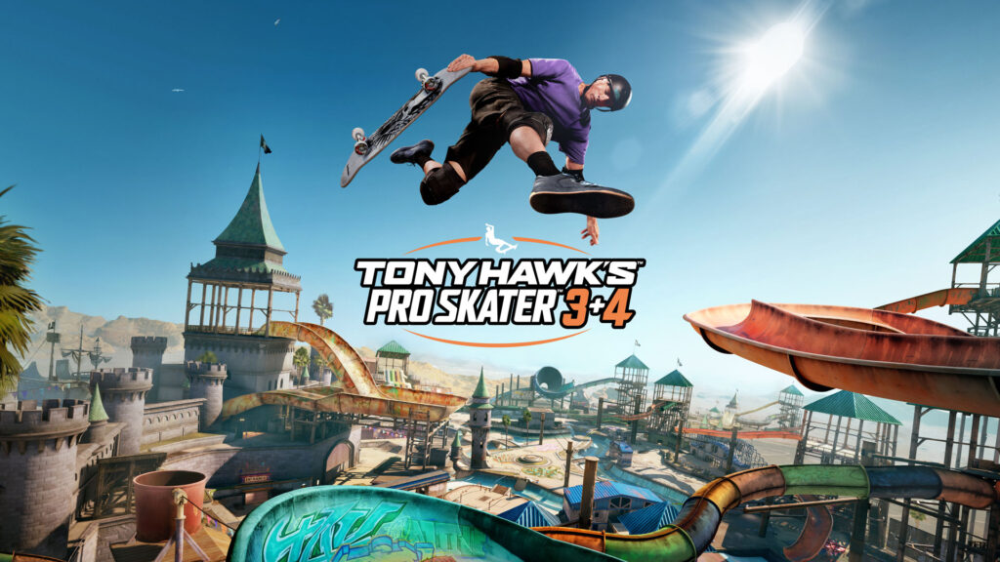

Featured
Tony Hawk's Pro Skater 3 + 4: What Can We Expect?
Activision has announced the highly anticipated remaster of Tony Hawk's Pro Skater 3 and 4, launching on July 11, 2025. Following the success of Pro Skater 1+2, the remastered collection features enhanced 4K graphics, classic and new levels, and iconic skaters like Tony Hawk, Rodney Mullen, and modern pros like Rayssa Leal and Nyjah Huston. A special edition includes the Doom Slayer as a playable character.
Notably, the career mode will return to the classic two-minute run format from Pro Skater 4. The game will be available on PlayStation, Xbox, Nintendo Switch, and PC.
Pre-orders are open for the Standard Edition ($49.99), Digital Deluxe Edition ($69.99), and Collector's Edition ($129.99), with Game Pass Ultimate subscribers getting access on launch day.
Visit the official trailer for a sneak peek!